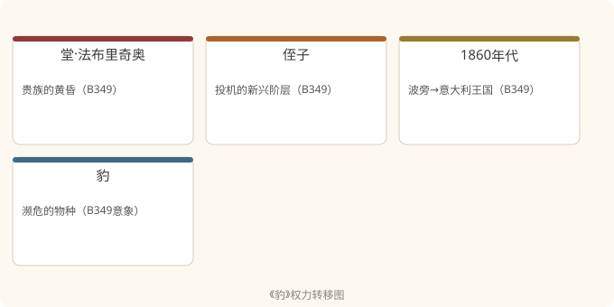

豹
一、基本信息
| 作者 | 朱塞佩·托马西·迪·兰佩杜萨 |
|---|---|
| 成书/出版 | 1958年死后出版（Britannica B349：Il gattopardo (1958, posthumous)——'only completed novel'） Giuseppe Tomasi di Lampedusa — Encyclopaedia Britannica（百科全书） |
| 国别/地区 | 意大利 |
| 时代 | 现当代 · 20世纪50年代（死后出版） |
| 体裁 | 长篇小说 |
| 语言 | 意大利语 |

《豹》权力转移图（主题·结构图）
二、创作背景
Britannica（B349）：Il gattopardo——'rejected by publishers during his lifetime, brought him world acclaim with its posthumous publication'（生前被拒、死后出版举世闻名）——'one of the most striking in 20th-century Italian literature'。
Britannica（B349）：'a psychological study of Don Fabrizio, prince of Salina'——萨利纳亲王目睹1860年代权力从波旁贵族移向新意大利王国与自由资产阶级。
Britannica（B349）：侄子投机革命并'攀上新兴阶层'（joins the revolution opportunistically and marries into the rising class）。
三、内容脉络
萨利纳亲王堂·法布里奇奥的心理研究：贵族的黄昏（B349：psychological study of Don Fabrizio）。
侄子的投机与'新兴阶层'的婚姻（B349）。
1860年代：加里波第与新意大利王国（时代背景通说待核）。
四、主要人物表
| 人物 | 身份 | 说明 |
|---|---|---|
| 堂·法布里奇奥 | 萨利纳亲王 | （B349：Don Fabrizio, prince of Salina） |
| 侄子 | 投机者 | （B349：nephew——名字通说待核） |
五、主题与艺术特点
- 贵族的挽歌（B349：心理研究）。
- 权力的转移：波旁→意大利王国→自由资产阶级（B349）。
- 投机的胜利与'豹'的终结（B349 侄子线）。
六、影响与评论
- Britannica：'one of the most striking in 20th-century Italian literature'（B349）。
Giuseppe Tomasi di Lampedusa — Encyclopaedia Britannica（百科全书） - Britannica：'only completed novel'——死后出版的传奇（B349）。
Giuseppe Tomasi di Lampedusa — Encyclopaedia Britannica（百科全书）
七、阅读建议
难点
- 1860年代意大利统一史（加里波第远征西西里——通说待核）。
- 西西里贵族的世界。
- 《豹》中译本（人民文学/译林等——通说待核）。
- 意大利文原版。
兰佩杜萨唯一长篇；与《故事集》(1961)对读。
八、待核实
- 侄子名（唐克雷迪说）核对（B349未载）。
- 1958年出版商（Feltrinelli说）待核。
- 1963年维斯孔蒂电影说待核。
- 西西里舞会开篇细节待核。
本页主要来源
朱塞佩·托马西·迪·兰佩杜萨的其他收录作品：豹